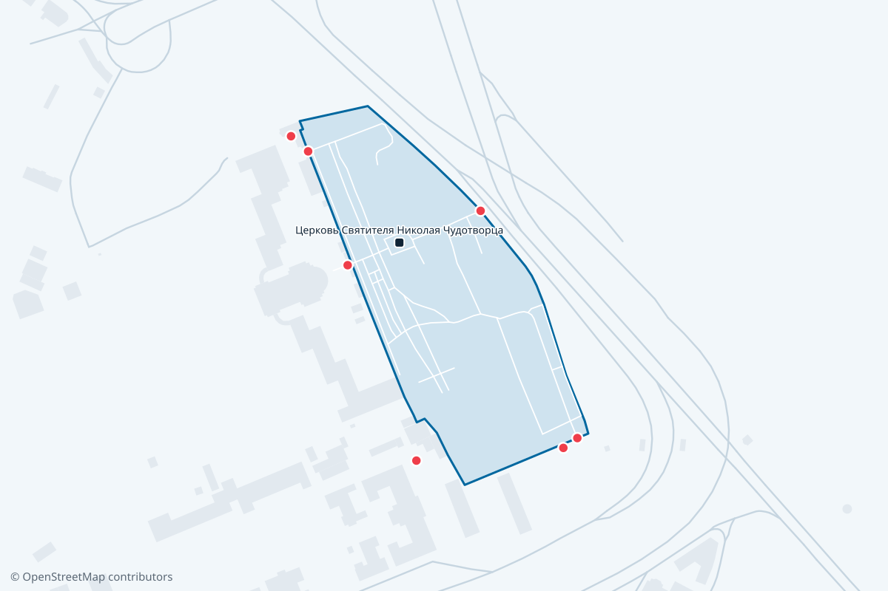

Метро
Площадь Александра Невского, 360 м
Пешком, около 5 минут.
Город меняет весь сайт: кладбища, службы, выплаты.
МЕСТ НЕ ДАЮТ ТОЛЬКО ПОДЗАХОРОНЕНИЕ
Санкт-Петербург · кладбище

Никольское кладбище находится в Центральном районе Петербурга. Площадь около 6 гектаров, обойти можно за один визит. Ближайшее метро «Площадь Александра Невского»: оттуда наземным транспортом и 5 минут пешком.
Метро
Пешком, около 5 минут.
Электричка
Платформа в 1,7 км от кладбища, электрички идут с Московского вокзала.
На машине — точку в навигаторе ставьте на воротах, а не на названии: иначе он приведёт к середине территории.
Входов 10. Навигатор ведёт к центру участка, поэтому точку ставьте на нужных воротах: обойти территорию по периметру это 1,1 км.
| Что | Данные |
|---|---|
| Адрес | 191167, Санкт-Петербург, наб. реки Монастырки, д. 1 лит. А |
| Часы работы | май–сентябрь 9:00–18:00, октябрь–апрель 9:00–17:00 |
| Район | Центральный район |
| Площадь | 5,8 га |
| Ближайшее метро | Площадь Александра Невского, 360 м |
| Железная дорога | Санкт-Петербург-Главный, 1,7 км |
| Телефон администрации | +7 (812) 274-29-52, +7 (911) 949-87-95 |
| Места | закрыто для новых захоронений, только подзахоронение (историко-мемориальное) |
Городская справочная +7 (812) 241-24-24 — телефон учреждения в Петербурге, а не самого кладбища.
Новых участков здесь не дают: кладбище закрыто для захоронений. Остаётся подзахоронение в существующую родственную могилу — с документами, подтверждающими родство, и с соблюдением санитарного срока.
Санитарный срок · 20 лет
Подзахоронение гробом в существующую могилу — не раньше чем через 20 лет после последних похорон. Это санитарный срок, сократить его нельзя. Для урны с прахом такого ограничения нет.
Поставить или заменить памятник, ограду, цветник — любое надмогильное сооружение — можно только с разрешения администрации. Выдают его по трём документам.
По разметке OpenStreetMap на территории отмечены Церковь Святителя Николая Чудотворца. Туалетов и воды в данных нет — это не значит, что их нет на месте.
Кладбище за Троицким собором стало третьим по счёту в Александро-Невской лавре. По данным Википедии, его основали в 1861 году. Страница РНБ об истории лавры датирует его иначе: отдельные могилы появлялись здесь с 1860-х, а как кладбище оно возникло в 1877 году.
Сначала его называли Засоборным. Никольским оно стало по церкви Николая Мирликийского, построенной в 1868–1871 годах по проекту Григория Карпова на деньги купца Николая Русанова, который устроил в цоколе семейную усыпальницу.
Здесь похоронены издатель Алексей Суворин, певица Анастасия Вяльцева, лётчик Лев Мациевич. В 1920-е годы кладбище грабили, склепы и часовни ломали, часть могил и памятников перенесли в музейные некрополи.
Церковь одно время служила крематорием, потом мастерскими. В 1985 году её освятили заново, и на кладбище снова начали хоронить. Позже здесь похоронили Льва Гумилёва, Анатолия Собчака и Галину Старовойтову.
Источник: Википедия, Российская национальная библиотека.
Нет. Кладбище закрыто для новых захоронений — возможно только подзахоронение в существующую родственную могилу.
Гробом — не раньше чем через 20 лет после последних похорон: это санитарный срок, сократить его нельзя. Для урны с прахом такого ограничения нет.
Телефон администрации — +7 (812) 274-29-52, +7 (911) 949-87-95. Городская справочная +7 (812) 241-24-24 отвечает по общим вопросам похоронного дела, но не по конкретному участку.
Летом, с мая по сентябрь, — 9:00–18:00. Зимой, с октября по апрель, — 9:00–17:00. Часы указаны по госсайту и обзвоном не проверялись.
Входов 10. Навигатор обычно ведёт к центру территории, поэтому точку лучше ставить на нужных воротах — обход по периметру это 1,1 км.
Нет. Установку любого надмогильного сооружения — памятника, ограды, цветника — согласуют с администрацией кладбища. Нужны чек на покупку, договор на работы и свидетельство о смерти.
Работы на участке делает партнёрская мастерская в Петербурге. Цену считают по замеру: от размера участка зависит и камень, и основание, и способ доставки.
Адрес, часы работы, телефон и эксплуатирующая организация — по данным СПб ГКУ «Специализированная служба по вопросам похоронного дела». Границы, дорожки и ворота — OpenStreetMap, © OpenStreetMap contributors. Часы обзвоном не проверялись.